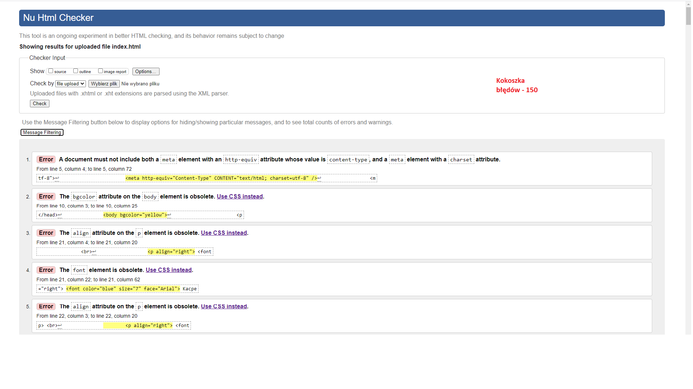
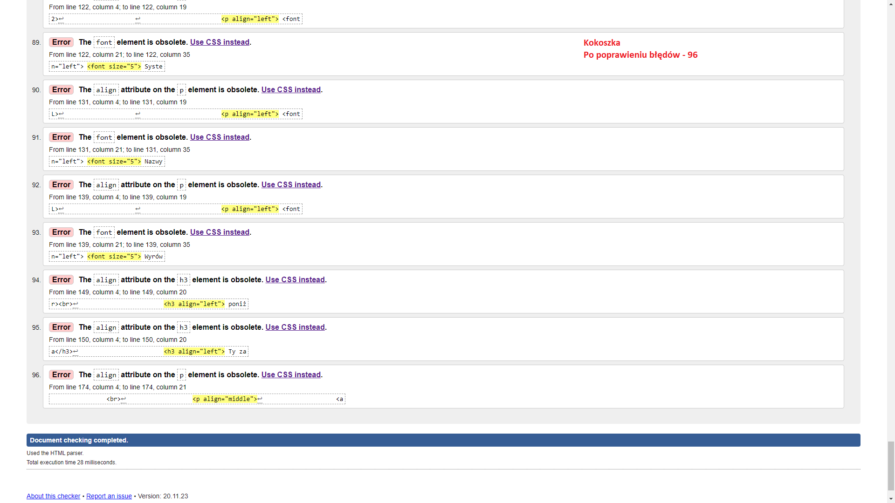

WALIDACJA
Walidacja strony internetowej to ściśle określone działania, mające na celu sprawdzenie czy budowa strony zawiera błędy.
Link do walidatora
Zrzut ekranu przed walidacją:

Zrzut ekranu po walidacji:

Wróć